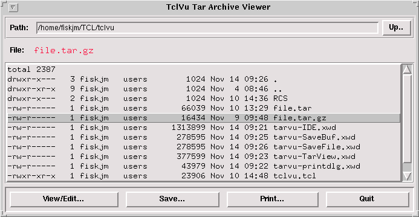
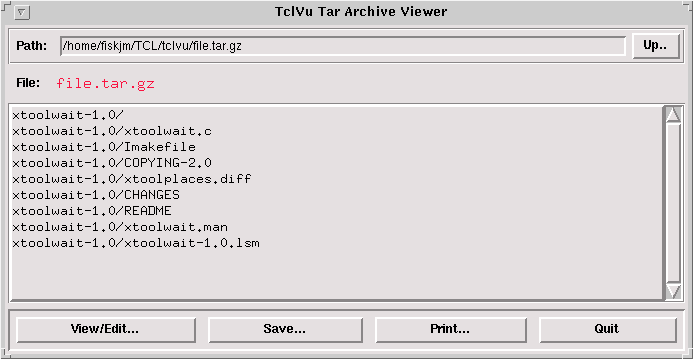
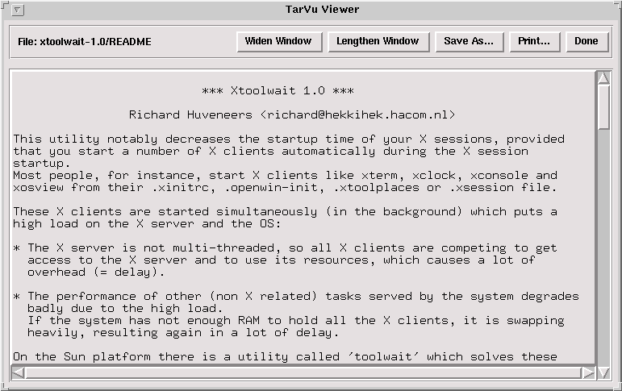
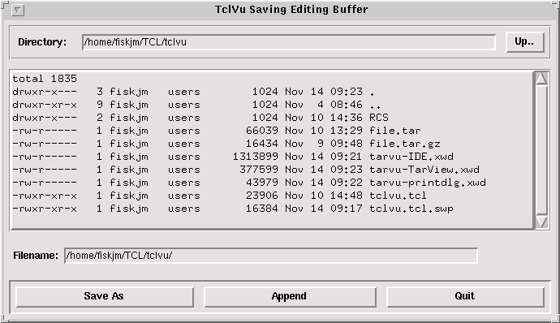
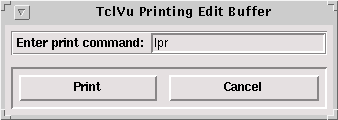

Welcome to The Linux Weekend Mechanic!
Published in the December 1996 Edition of the Linux Gazette
Copyright (c) 1996 John M. Fisk <fiskjm@ctrvax.vanderbilt.edu>The Linux Gazette is Copyright(c) 1996 Specialized Systems Consultants Inc.

| You've made it to the weekend and things have finally slowed down. You crawl outa bed, bag the shave 'n shower 'cause it's Saturday, grab that much needed cup of caffeine (your favorite alkaloid), and shuffle down the hall to the den. It's time to fire up the Linux box, break out the trusty 'ol Snap-On's, pop the hood, jack 'er up, and do a bit of overhauling! |
 Welcome to the December Weekend Mechanic!
Welcome to the December Weekend Mechanic!Well, I'm afraid that the 'ol Weekend Mechanic is going to be a short one this month. I've got six classes this fall and have finally reached the point in the semester where I guess they think we're smart enough to start actually doing things! And so, we're all doing things... LOTS of things, as a matter of fact. That hallowed barometer of academic industriousness, Euclid's Little Known "Shave-To-Face" Ratio, is falling predictably and the No-Doze blood titers are reaching therapeutic levels. As they say in Tennessee, we're all starting to look like a bunch of rugs...
"...walked all over, drug outside, and beat with a stick!"
Anyway, we're all surviving. All of you out there in Academia Land know what I'm talking about; all of you who've run the gauntlet already and have achieved "A Real Life" will smile knowingly. (And will smile to yourselves, knowing that there is no such thing as "A Real Life")
I've been eating a generous portion of Humble Pie here recently after last month's Tar Tricks and Find faux pas. I sincerely apologize for any mis-information and want to gratefully thank all of you who took the time to drop a note and provide more accurate information. I've gotten permission from a number of writers to include their letters which can be read below. They add a good deal more light to the subject!
Thanks guys!
Also, I did manage to eke out a bit of "recreational programming" time and hacked together a prototype tar archive viewer. This is still pretty alpha stuff, but it appears to be relatively stable and I've actually been using it. Any of you who are interested in Tcl/Tk might enjoy hacking away at this. I'll continue to tinker around with this and, by January or so, just might have a reasonably working version for all of you to play around with. If you're interested, have a look at it below.
Anyway, hope you enjoy!
John
Saturday, 23 November 1996
 The Mailbox
The MailboxAs I mentioned above, I've been eating a good deal of Humble Pie in the past couple weeks after last month's articles on using tar and find. Actually, everyone who wrote was very gracious AND took the time to provide more accurate information. I was impressed by the spirit in which this was done: no one was vindictive, no one was demeaning (although there were a few "raised eyebrow" type letters :-).
Anyway, I owe a great debt to all of you who took the time to write. I REALLY appreciate it. And to the school teacher from Des Moines, I'm almost done...
I will always RTFM
I will always RTFM
I will always RTFM
I will always RTFM
I will always RTFM
I will always RTFM...
Thanks folks. Here's the letters...
Date: Fri, 01 Nov 1996 15:32:09 +1100
From: Paul Russell <prussell@sydney.trl.telstra.com.au>
To: fiskjm@ctrvax.Vanderbilt.Edu
Subject: Linux Weekend Mechanic: November Edition of the Linux Gazette (#11)
Hi John,
Just reading Linux gazette for the first time, and stumbled upon your Weekend Mechanic page. I'm sure you're going to get more mail about this, but I read with some astonishment your "More tar tricks" section.
My Linux box is currently about 1000kms away, but I believe that the "tar -tvzf file.tar.gz |tr -s ' ' |cut -d ' ' -f8 |less" can be replaced with "tar tzf file.tar.gz |less".
I liked it though. If you want a useful pipes example, how about a "Oops! I untarred in the wrong place and I want to clean up!" example:
tar tzf file.tar.gz | xargs rm -f 2>/dev/null tar tzf file.tar.gz | sed 's:[^/]*$::' | sort -ru | xargs rmdir 2>/dev/null
Analysis and improvement is left as an exercise for the reader. 8-)
Enjoy,
Paul.
--
Paul.Russell@RustCorp.com.au "Engineer? So you drive trains?" Lies, damned lies, and out-of-date documentation. Currently contracted to Telstra, Sydney.
Date: Tue, 05 Nov 1996 11:19:09 -0500
From: "James V. Di Toro III" <karrde@gats.hampton.va.us>
To: fiskjm@ctrvax.Vanderbilt.Edu
Subject: LG #11 Weekend Mech.
Just a few nits on a couple of the things in this piece.
tar ...
Well it sure showed off some neat features of some utilities, but what
you did with that first line can be solved by omitting one character from
the tar options.
tar -tzf | less == tar -tvzf |tr -s ' ' |cut -d ' ' -f8 |less
which vs. type ...
which will also give you similar results on aliases and built-ins:
which ls ls: aliased to /bin/ls $LS_OPTIONS which complete complete: shell built-in command.
This is with tcsh 6.05, YMMV.
-- ================================================================ /| |\ James V. Di Toro III | "I've got a bad feeling / |_| \/\ System Administrator, GATS, Inc.| about This" |()\ / || karrde@gats.hampton.va.us | |---0---_| W: (757) 865 - 7491 | -various \ / \ / ^:::^
(Just a quick note about this: James is right, 'which' works as he wrote above if you're using tcsh [because it is a shell built-in??]. Those of you running BASH and using the 'which' executable will find that the executable does not return information on aliases, shell functions, and shell built-in's. I wrote James back after trying this and he concurred.)
Date: Wed, 06 Nov 1996 11:14:51 +1100
From: Keith Owens <kaos@edison.dialix.com.au>
To: fiskjm@ctrvax.Vanderbilt.Edu
Subject: More on locate and update
Saw your note on locate/find in LJ #11. According to my manual page, "locate lynx" is equivalent to "locate '*lynx*'", locate does automatic insertion of leading and trailing '*' if the pattern contains no metacharacters. "locate 'lynx*'" will only find files that start with lynx (i.e. no leading directory or /).
I find the locate command and its associated updatedb command to be very useful for indexing ftp lists and cdroms. Most sites and cdroms have a list of the files in one form or another but they are not easily searched. Some are in find format (directory included in file name), others in ls -lR (directory is separate). I created updatedb.gen (from updatedb) to read a file list and build a locate style database, locate.gen then searches that database.
For example, go to sunsite, /pub/Linux, download 00-find.Linux.gz, then run
updatedb.gen sunsite 00-find.Linux.gz
which builds /var/spool/locate/locatedb.sunsite. "locate.gen sunsite file" does an instant search of sunsite for the file, obviously you have to fetch a fresh copy of the listing occasionally.
Instead of searching several InfoMagic cdroms for a file, mount the first one and
updatedb.gen im /cdrom/00-find
"locate.gen im file" then does a very fast search of the entire set of InfoMagic cdroms and can be done without mounting any cdroms.
updatedb.gen and locate.gen are attached. updatedb.gen works out which format the input file is in and selects the field(s) containing the filename.
-- *** O . C. Software -- Consulting Services for Storage Management, *** *** Disaster Recovery, Security, TCP/IP, Intranets and Internet *** *** for mainframes (IBM, Fujitsu, Hitachi) and Unix. ***
(The idea of using 'locate' on a CD collection sounds like a GREAT idea. I've not yet had the time to try it, but plan to give this little gem a whirl!)
Date: Fri, 08 Nov 1996 09:21:52 -0600 (CST)
From: John Benavides <benavide@mailhost.rsn.hp.com>
To: fiskjm@ctrvax.Vanderbilt.Edu
Subject: How to use "-name" option on find command
In your column, Weekend Mechanic, in the "Linux Gazette" (Oct 1996 issue) on your Web page at: ../issue11/wkndmech.html
You say:
> The way that it should work is that you give locate a filename pattern
> which it searches for. Such as:
>
> locate lynx*
>
> However, when I tried this on my system, it simply returned nothing.
> Using locate lynx worked like a charm.
>
> Got me.
Whenever you use any command with arguments that need to contain wild card characters, don't forget to quote those wild card characters from the shell. I teach this to my students in my introductory UNIX class. Remember the shell gets first crack at the wild card. So the shell will try to match "lynx*" with any file names in your local directory.
Use the echo command to see what the shell expands your command line to for the buggy command:
echo locate lynx*
This will give you an idea of what the "locate" command is really searching for.
Any one of the three commands below will prevent the shell from processing your wild card pattern.
locate "lynx*" locate 'lynx*' locate lynx\*
The same is true for your other example with find:
find / -name "lynx*" -print find / -name 'lynx*' -print find / -name lynx\* -print
Regards,
John
-- +++++++++++++++++++++++++++++++++++++++++++++++++++++++++++++++++++++ + John Benavides | Hewlett Packard - CxD + + 3000 Waterview Parkway | e-mail:benavide@rsn.hp.com + + Richardson, TX 75080 | (972) 497-4771 Fax: (972) 497-4245 + +++++++++++++++++++++++++++++++++++++++++++++++++++++++++++++++++++++
Date: Fri, 08 Nov 1996 16:34:23 +0100
From: Robert Budzynski <Robert.Budzynski@fuw.edu.pl>
To: fiskjm@ctrvax.Vanderbilt.Edu
Subject: why locate didn't work as expected...
Hi John,
Why didn't 'locate lynx*' work for you ? Well, here's what happens when you issue that command: first, bash (or any standard shell) attempts to match the pattern 'lynx*' against names of files present in the _current_ directory. If it finds any that match, they are _all_ substituted into the command line and passed on as arguments to locate. This sure isn't what you want... If (as was apparently the case) none are found, the pattern is left unexpanded... so why didn't it work? Well, to quote the man page:
If a pattern is a plain string -- it contains no metachar- acters -- locate displays all file names in the database that contain that string anywhere. If a pattern does con- tain metacharacters, locate only displays file names that match the pattern exactly. As a result, patterns that contain metacharacters should usually begin with a `*', and will most often end with one as well. The exceptions are patterns that are intended to explicitly match the beginning or end of a file name.
So, there's your answer! 'Match the pattern exactly' means here that the fully qualified pathname (starting with a /) must match. The other lesson here may be summarized with another quote from the locate(1) man page:
Patterns that contain metacharacters should be quoted to protect them from expansion by the shell.
This applies as well to patterns passed to 'find', i.e.
$ find /usr/local -name 'lynx*' -print
is the 'politically correct' command line to use.
Merry Linuxing!
-- ###################################################################### Robert J. Budzynski Institute of Theoretical Physics Warsaw University Warsaw, Poland ######################################################################
Date: Sat, 09 Nov 1996 02:11:00 +0000
From: Phil Bevan <philb@innotts.co.uk>
To: fiskjm@ctrvax.Vanderbilt.Edu
Subject: LG issue 11 - find
Hello John,
Glad to see you've not abandoned the Gazette totally. One thing though on your article about 'find'. I've noticed in the past when using the find command, it has not found all the files when using wild card characters such as '*' (as in your example find /usr/local -name lynx* -print). I discovered from one of the linux newsgroups, that the shell tries to expand lynx* first, and it is possible that find will not search all the directories. To stop bash from expanding the filename enclose it in single quotes, as below:
find /usr/local -name 'lynx*' -print
Bet you I'm not the first to point his out :)
Regards
Phil
--
This Sig intentionally left blank
Again, thanks to EVERYONE that took the time to write! I know that y'all are busy and I appreciate corrections, clarifications, and suggestions.
John
 A Tcl/Tk Tar Viewer
A Tcl/Tk Tar ViewerI'm going to apologize at the outset -- it's Saturday and I've still got a small mountain of work to do for the upcoming week and so I just don't have the time to write an awful lot about this. I'll try to summarize the highlights of what I was attempting to do and what actually worked.
To recap from last month, I'd been trying to find a way to get a simple listing of all the files in a tar archive. As was pointed out, this can be done using:
tar -tf file.tar
tar -tzf file.tar.gz
depending on whether the file is a tar or tar+gzip file. (I'm assuming that
you're using GNU tar, BTW, not all implementations of tar support the '-z'
option which uses 'gzip' to either compress or uncompress an archive.)
The purpose for doing this was to allow you to get a tar listing and then use this as an argument to tar to print that file to standard output. For example, if your tar archive looked like:
xtoolwait-1.0/ xtoolwait-1.0/xtoolwait.c xtoolwait-1.0/Imakefile xtoolwait-1.0/COPYING-2.0 xtoolwait-1.0/xtoolplaces.diff xtoolwait-1.0/CHANGES xtoolwait-1.0/README xtoolwait-1.0/xtoolwait.man xtoolwait-1.0/xtoolwait-1.0.lsm
then using a command like:
tar -tzOf xtoolwait-1.0.tar.gz xtoolwait-1.0/README |less
^^^^^^^^^^^^^^^^^^^^
would allow you to view the file 'README' by piping it to 'less'. That was the reason for needing to get a listing of just the filenames in the archive -- to be able to invoke tar with the '-O' option so that it would output the results to standard output.
Now, the thing is that tcl/tk will allow you to capture the output of a file using 'open'. Coupled with 'fileevent', this allows you to direct the output of a command to a text widget for viewing and editing. So this was the direction I was going.
I've actually got this working now. It's definitely NOT a showpiece of tcl/tk coding: this 'ol thing wouldn't win any programming contests. Still, as a quick prototype (I hacked it out in two days...), it gave me some ideas about how to put together something a bit more sturdy. Basically, as it stand right now, its features include:
As I said, it is actually working right now and I've used it several times over the past couple weeks.
Parenthetically, I've been using Tcl 7.5 and Tk 4.1 for development. I don't know if any of you have tried compiling this from sources. Using the supplied makefile, I was unable to get the shared libraries to compile. It's been a while since I did this but, if memory serves me correctly, it fails on some system test and thus refuses to compile the shared libs. I did find, however, that by adding '-fPIC' to the CFLAGS, copying the *.o files to a separate directory, and then using something like:
gcc -shared -Wl,-soname,libtcl.so.0.7 -o libtcl.so.0.7.5 *.o
that I was able to compile a working shared library. I'd be interested in
hearing from anyone else who's tried to compile tcl or tk from sources. I'll
quickly admit that I'm still a neophyte when it come to C and UNIX/Linux
programming. The above works, but if it is "Not The Right Way" then
please drop a note.
That said, let's take the penny tour...

To begin, when you start the tarvu program, it displays this directory browser. The path is displayed at the top along with the name of the file (if any) which has been selected. You navigate to a new directory by either:
If you single click on a file, then its name is displayed after the 'File:' label. Single clicking on a directory has no effect. If you click on a tar or tar+gzip file, then you can use the 'View/Edit...' button to view a listing of the contents of the file. Double clicking on the file has the same effect.

After a tar or tar+gzip file has been selected, the 'Tar Browser' allows you view the contents of the tar archive. Now, you can use the full set of operation buttons to either view/edit, save, or print a specific file within the tar archive. Single click on a file within the listing and then click on any of the operation buttons. If you double-click on a file, then it defaults to the file viewer:

The viewer allows you to view, edit, save, or print the contents of a file within the archive. The name of the file is displayed in the upper left hand corner. To either widen or lengthen the edit window, click on 'Widen Window' or 'Lengthen Window'. Now, you can manually resize the window, but doing so does not automatically resize the text widget. I've not been successful in figuring out how to do this, although I suspect that it can be done. Until then, use the buttons... :-)
If you edit the file and want to save it to disk (NOT back to the archive), then click on the 'Save As...' button. This brings up a directory browser which allows you to save the contents of the editing buffer:

This allows you to save or append the contents of the editing buffer to a file. The directory browser features work in a fashion similar to what was previously described. Because this was a quick hack, I simply coded another proc to provide the save/append feature for a FILE within the archive. So, if you go back to the tar archive list, select a file, and then click on the 'Save...' button, you'll see a directory browser which looks similar to the one above.
Finally, if you click on the 'Print...' button, a small dialog box is displayed:

You simply input the command to print to your printer and click on the 'Print' button.
Pretty simple, eh?
As I mentioned before, this is no paragon of programming brilliance. This was
a rather quick hack, but it does show what can be VERY EASILY done with even
the basic tools of Tcl/Tk. If anyone is interested in this, you can get the
tcl script here:
For those of you using Netscape, hold down the Shift button and single click
with the left mouse button on this link to save the file to disk. Call it
whatever you'd like, and then set the permissions to something like:
I've got mine symlinked to 'tclvu' to make it easier to remember.
In all honesty, there are LOTS of things that could be done to make this more
useful or efficient. Just a couple TODO's that come to mind include:
The thing is, there are all kinds of fun things that can be done. This simple
tcl/tk wrapper for tar just lets you view, edit, and print files at the
moment. The tar manual page can give you further ideas about what could be
done.
For those of you needing a "real" tar utility, I'd strongly suggest
using Miguel de Icaza's GREAT program Midnight Commander. You
can pick up the sources at any ftp site which mirrors the GNU utilities such
as:
Also, there's a program called xtar which is found at the
ftp.x.org ftp site. I've honestly not seen this mentioned anywhere and
yet it's a VERY handy little program that allows you to browse and view the
contents of a tar archive. You'll need the Motif development libraries to
compile this, however.
Well, as I said, this was a pretty quick tour. Please feel free to hack away
at this and enjoy it. I tried to comment the code, so you should have some
idea about my mental state when the thing was written.
Hope you enjoy!
John
Well, I'd hoped to include a lot more stuff in this month's WM column, but
time has completely gotten away from me and it's already almost dinner time
(and no homework done yet... :-). I must admit that I enjoy doing this a LOT
more than Linear Algebra (...sorry Dr. Powell, it's still a GREAT course :-)
So, what are the rest of you guys working on out there...?
I upgraded my home system over this past summer to a Cyrix P-166+ machine with
a Triton II MB, 32 MB EDO RAM, Diamond Stealth Video VRAM graphics card,
Toshiba 8X CDROM, and CTX 1765GME monitor. I dropped in the old Maxtor 1.6
Gig drive from my previous machine and have just gotten a second Maxtor 2.0
drive (so Linux can finally have its own drive!). I'll be installing this and
reinstalling much of the system over Christmas Break. If this sounds like a
brewing "mail brown-out", you're probably right... :-)
I've also gotten pretty enamoured with Tcl/Tk as you might have noticed. This
is a seriously fun programming environment. Now, I know that this isn't for
everyone and there are folks who've tried tcl that just frankly didn't like
the language. Still, there are a growing number of truly impressive add on's
including tclX, BLT, Tix, and [incr tcl] that add a lot of nice
features. I'd especially commend to the Tix extension. It provides a
set of meta-widgets such as directory browsers, tabbed windows, and the
like. It precludes your having to code these types of windows and gives you
a higher level widget to work with. If you're interested in this, then
definitely run the demo program as it give you a IMPRESSIVE tour of the widget
set.
Finally, I've just gotten a microphone for my sound card (SB Vibra 16 PnP) and
have been messing around with creating sound files.
Pretty cool :-)
I'm still not completely facile with all the basics, but I've gotten a few
snippets recorded, including a "Happy Birthday" rendition (my wife
and me) to our sister-in-law. It'd curl 'ol Lawrence Welk's toes, I suspect,
but it was fun to send this rascal out via email. You know... "reach out
and touch someone..."
Well, here's wishing you Happy Linux'ing!
Since I didn't have time this month do to a "Christmas Shopping
List" of Linux goodies, I'll try to get this in next month so that after
you return all those bottles of aftershave and the argyle socks, you'll know
what to do with the money... :-)
From our household to yours,
Wishing you a Merry and Joyous Christmas Season!
John
Version Information:
Weekend Mechanic #1, November 1996
Tcl Tar Archive Viewer Source
% chmod 755 tclvu.tcl
GA Tech's FTP server
Saturday 23 November 1996
 Closing Up Shop...
Closing Up Shop...
Saturday 23 November 1996
 If you'd like,
drop me a note at:
If you'd like,
drop me a note at:
$Id: wkndmech.html,v 1.2 2002/10/09 22:24:17 lg Exp $
Previous "Weekend Mechanic" Columns
![[ TABLE OF CONTENTS ]](../gx/indexnew.gif)
![[ FRONT PAGE ]](../gx/homenew.gif)